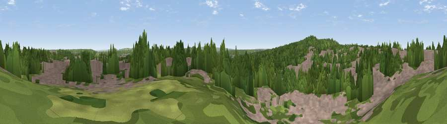

Viewpoint near Aldershot
#38758 in England · top 52% of its area beats it · near AldershotThe view, rendered

A 360° render of this exact spot computed from the terrain model, tree cover and land cover — summer colours, afternoon light, calibrated against photographs of famous viewpoints. Real trees, hedges and buildings will differ in detail.
The panorama
Grey silhouette: terrain skyline in each direction (720 bearings, Earth curvature and refraction included). Dashed green: skyline with trees (+15 m) and buildings (+8 m) as obstacles. Blue strip: how far the ground is visible on each bearing.
Where the view opens
Wedge length = distance to the farthest visible ground on that bearing (vegetation-aware). Rings at 10, 25 and 50 km.
What fills the view
48% woodland · 44% built-up · 8% grassland ·
Angular shares of the visible panorama (visual magnitude), not map area. Landscape diversity 0.42 (0–1 Shannon).
Key numbers
More beautiful places nearby
The staircase of upgrades: each row has a higher view potential than everything closer. Driving times are estimates from straight-line distance, calibrated against real road routing — check an actual route before setting out.
| Place | Direction | Drive | Score |
|---|---|---|---|
| Hungry Hill | WSW · 1 km | ~4 min | 57.2 |
| Viewpoint near Upper Hale | W · 2 km | ~6 min | 58.3 |
| Viewpoint near Puttenham | ESE · 6 km | ~12 min | 62.0 |
| Viewpoint near Wanborough | ESE · 9 km | ~17 min | 65.5 |
| Viewpoint near Compton | E · 10 km | ~20 min | 66.7 |
| Viewpoint near Hascombe | SE · 18 km | ~31 min | 70.1 |
| Viewpoint near Fernhurst | SSE · 22 km | ~36 min | 75.1 |
| Beacon Hill | S · 32 km | ~50 min | 85.8 |
51.24519, -0.77037 · source: screening · position refined by local search. Computed location — check access rights before visiting.